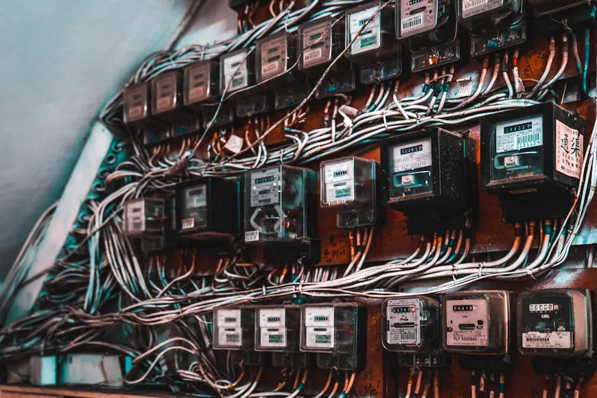
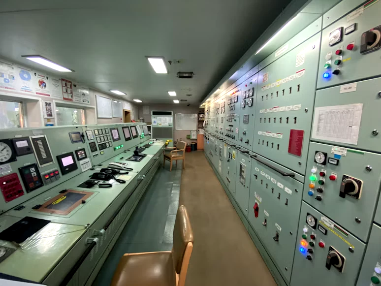
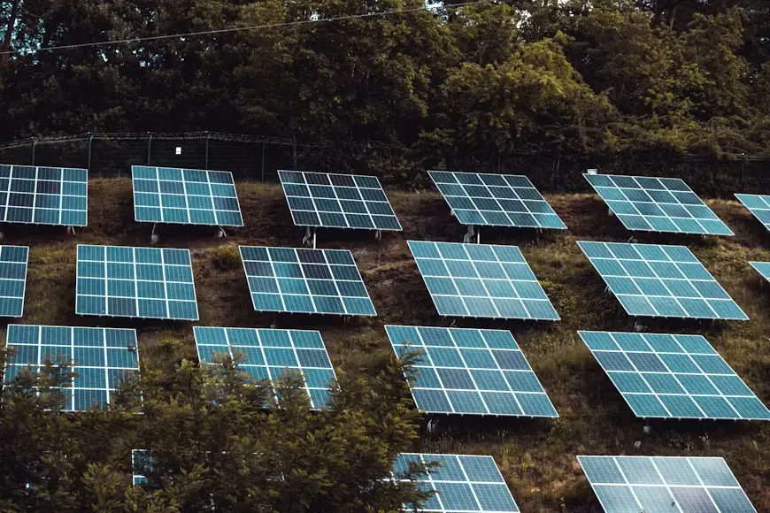
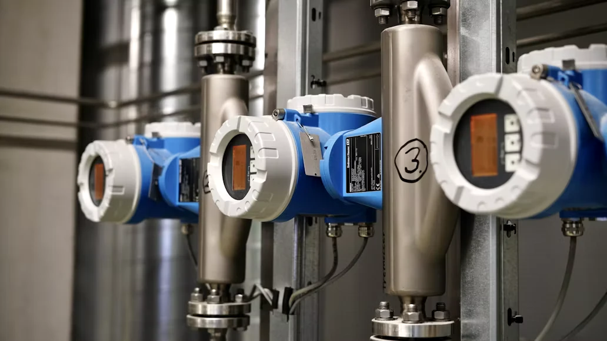

Mobility
MobilityMetro Line 3 corridor
Driverless trains linking 14 stations with signal priority.
Twelve flagship projects, each with a budget, a timeline and a public progress bar. Follow what is being built in your district.
A 2026 capital plan of $4.2 billion, published line by line. Mobility and energy take the largest share because they touch the most residents.
Filter by sector. Progress bars fill as each card scrolls into view.
MobilityDriverless trains linking 14 stations with signal priority.
 Mobility
MobilityJunction AI that reduces waiting times on 300 arterial roads.
 Energy
EnergyCommunity solar and storage for 30 districts.

Energy1.1 million homes with hourly usage and outage alerts.
 Water
WaterAcoustic leak sensors across 3,000 km of mains.
 Safety
SafetyAdaptive lighting, SOS points and coordinated dispatch.
 Health
HealthShared records and tele-care for 60 neighbourhood clinics.
Two million trees and cool corridors across the city.
 Platform
PlatformOne account for permits, taxes, certificates and grievances.
One operations floor where traffic, power, water, emergency and weather teams see the same live picture and act together.

Tap or hover a marker to see what is being built there. This is a stylised diagram of the city, not to scale.
Announcements, tenders and service notices from the authority.
.webp)
Tunnelling is complete on the northern section, six months ahead of the original programme.
Read update
Battery storage now covers the evening peak in all northern districts.
Read update
Acoustic sensors flagged 214 hidden leaks in their first quarter of operation.
Read updateLocal firms are invited to bid on edge data centres. Bids close on 30 October.
Read update